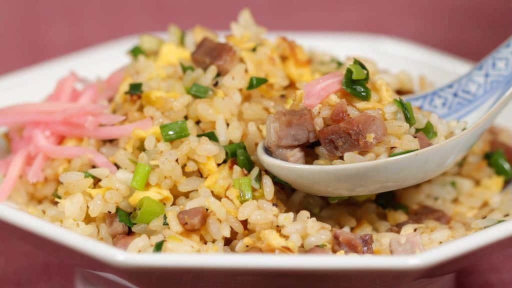

Chahan

Description
Enjoy the Japanese fried rice dish Chahan with Char Siu (Chinese barbecued pork), egg and lots of spring onion leaves.
The aroma of the sauteed onion leaves, garlic and soy sauce makes the Chahan more delicious.
Ingredients
- 1 Egg
- 40 g Char Siu
- 2 tbsp Long Green Onions
- 1 Garlic
- Oil
- Sake
- Soy Sauce
- Steamed Rice 150g
Steps
- Cut the char siu, Chinese-flavored barbecued pork into 5mm (0.2") cubes. If it’s not available in your area, you can also use ham instead.
- Thoroughly beat the egg in a bowl.
- Add the vegetable oil to a pan and turn on the burner. Add the chopped long green onion and stir-fry on low heat until aromatic.
- Add the chopped garlic clove and continue stirring. When the aroma grows stronger, increase the heat.
- Add the beaten egg and the hot steamed rice.
- etcetera...